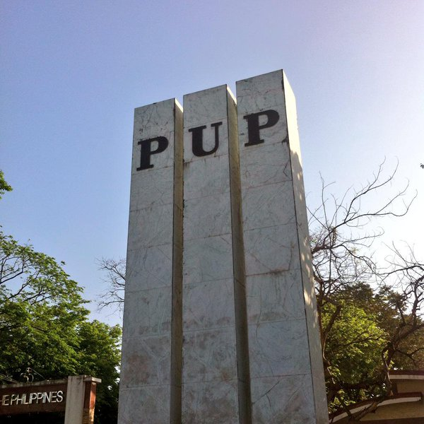

The Triad of pillars may also stand for wisdom, strength and beauty because there should be wisdom to contrive, strength to support and beauty to adorn any great or important undertaking.
Since 1987, however, the Pylon came to symbolized truth, excellence and wisdom.